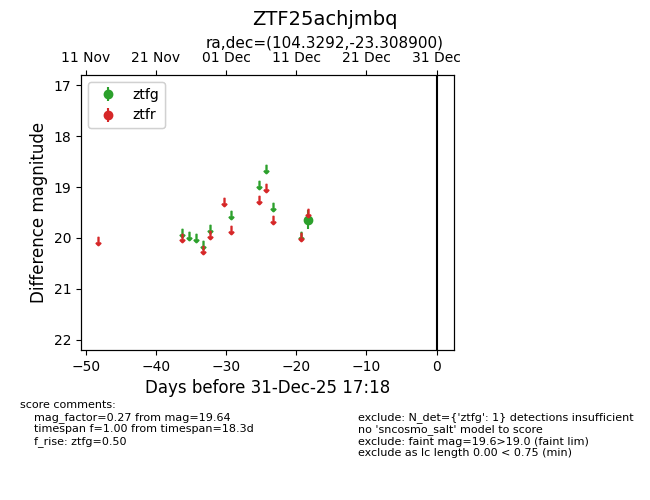
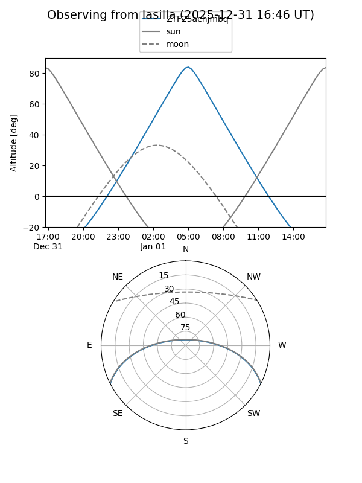
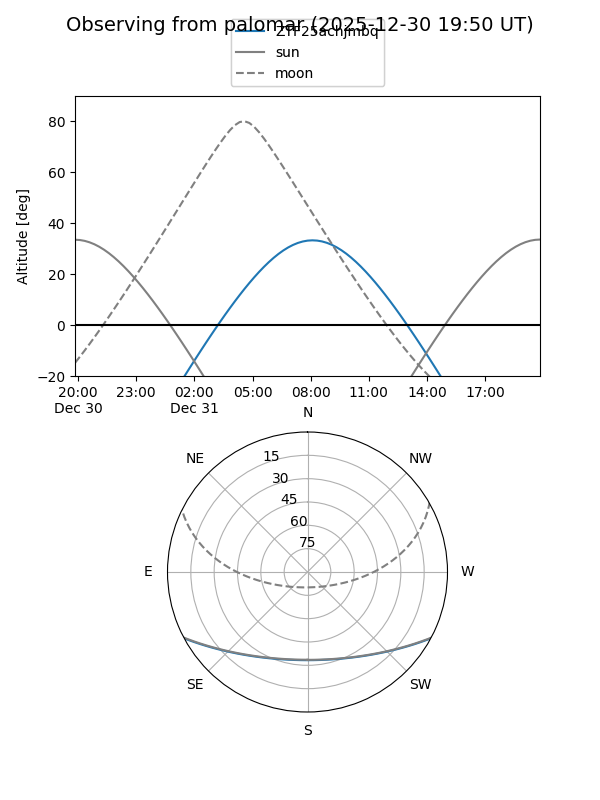

ZTF25achjmbq
Target ZTF25achjmbq at 2025-12-18 11:18
Aliases and brokers:
FINK: fink-portal.org/ZTF25achjmbq
Lasair: lasair-ztf.lsst.ac.uk/objects/ZTF25achjmbq
ALeRCE: alerce.online/object/ZTF25achjmbq
alt names
ZTF25achjmbq (ztf,fink_ztf)
Coordinates:
equatorial (ra, dec) = 104.3292,-23.30890
equatorial (HMS+DMS) = 06:57:19.00,-23:18:32.04
galactic (l, b) = (234.4997,-9.17578)
Photometry
last ztfg=19.64
1 ztfg detections
Lightcurve

Visibility


Additional plots